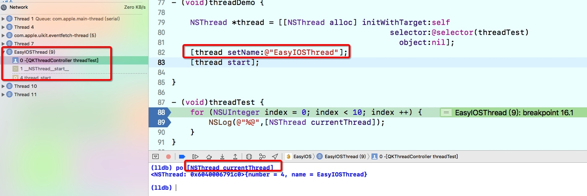

iOS 与多线程
· NSThread 可以直接操作线程
· GCD: Grand Central Dispatch (GCD)是Apple开发的一个多核编程的较新的解决方法。它主要用于优化应用程序以支持多核处理器以及其他对称多处理系统。它是一个在线程池模式的基础上执行的并行任务。
· NSOperation 在GCD之上的封装，更适合添加操作之间的依赖关系。
NSThread 常用点
- setName 可以定义线程的名字，方便跟踪和调试
- [NSThread currentThread] 可以看当前操作的线程
NSThread *thread = [[NSThread alloc] initWithTarget:self
selector:@selector(threadTest)
object:nil];
[thread setName:@"EasyIOSThread"];
[thread start];

3.最厉害的一点，他可以直接让线程死亡，也就是当前没做完的操作立马终止
[thread exit];
GCD
- dispatch queue
任务间执行的方式
DISPATCH_QUEUE_CONCURRENT 并行
DISPATCH_QUEUE_SERIAL_INACTIVE 串行
同步异步
dispatch_async 开启异步队列，具备开启线程的能力
dispatch_sync 开启同步队列，不会开辟新的线程
1.并行异步
dispatch_queue_t queue = dispatch_queue_create("gcd1.queue", DISPATCH_QUEUE_CONCURRENT);
dispatch_async(queue, ^{
for (int index = 0; index < 10; index++) {
NSLog(@"gcd1.queue %@",[NSThread currentThread]);
}
});
dispatch_async(queue, ^{
for (int index = 0; index < 10; index++) {
NSLog(@"gcd2.queue %@",[NSThread currentThread]);
}
});
dispatch_async(queue, ^{
for (int index = 0; index < 10; index++) {
NSLog(@"gcd3.queue %@",[NSThread currentThread]);
}
});
dispatch_async(queue, ^{
for (int index = 0; index < 10; index++) {
NSLog(@"gcd4.queue %@",[NSThread currentThread]);
}
});
dispatch_async(queue, ^{
for (int index = 0; index < 10; index++) {
NSLog(@"gcd5.queue %@",[NSThread currentThread]);
}
});
执行结果
1.gcd1 gcd2 gcd3 gcd4 gcd5 会随机的打印，也就说是同时执行
2.[NSThread currentThread] 不是主线程，且有多个线程
dispatch_async 会从当前的线程切换到新的线程， DISPATCH_QUEUE_CONCURRENT 并发执行，异步并发的线程会开启多条线程，线程的数量由任务数量、系统可分配线程数共同决定
串行异步
dispatch_queue_t queue = dispatch_queue_create("gcd1.queue", DISPATCH_QUEUE_SERIAL);
dispatch_async(queue, ^{
for (int index = 0; index < 100; index++) {
NSLog(@"gcd1.queue");
}
});
dispatch_async(queue, ^{
for (int index = 0; index < 100; index++) {
NSLog(@"gcd2.queue");
}
});
执行结果
1.gcd1 打印完成后才接着打印gcd2
2.不是在主线程，线程打印输出 <NSThread: 0x60400047f500>{number = 8, name = null}
并行同步
dispatch_queue_t queue = dispatch_queue_create("gcd1.queue", DISPATCH_QUEUE_CONCURRENT);
dispatch_sync(queue, ^{
for (int index = 0; index < 100; index++) {
NSLog(@"gcd1.queue %@",[NSThread currentThread]);
}
});
dispatch_sync(queue, ^{
for (int index = 0; index < 100; index++) {
NSLog(@"gcd2.queue %@",[NSThread currentThread]);
}
});
串行同步
dispatch_queue_t queue = dispatch_queue_create("gcd1.queue", DISPATCH_QUEUE_CONCURRENT);
dispatch_sync(queue, ^{
for (int index = 0; index < 100; index++) {
NSLog(@"gcd1.queue %@",[NSThread currentThread]);
}
});
dispatch_sync(queue, ^{
for (int index = 0; index < 100; index++) {
NSLog(@"gcd2.queue %@",[NSThread currentThread]);
}
});
执行结果
1. 都是在当前线程执行，调试的时候是在主线程，所以打印显示的是 mian 线程
2. 任务是顺序打印的
因为是同步任务，所以不会从线程池获取线程，只是使用当前线程，任务就只能一个执行完成后在执行其他的任务
小结
队列执行方式
串行队列是一个任务一个任务顺序执行
并行队列是可以同时调度多个任务
*
任务开启方式
同步执行：不会到线程池里边获取子线程
异步执行：只要有任务，就会去获取新线程 【主队列只有一条线程，除外】
两个重要的队列
dispatch_get_global_queue 全局队列，他是一个并发的队列
dispatch_get_main_queue() 主队列，他是串行的队列【有且只有主线程】
for (int index = 0; index < 5; index ++) {
dispatch_async(dispatch_get_global_queue(0, 0), ^{
NSLog(@"dispatch_async %@ %d",[NSThread currentThread],index);
});
dispatch_sync(dispatch_get_global_queue(0, 0), ^{
NSLog(@"dispatch_sync %@ %d",[NSThread currentThread],index);
});
NSLog(@"come here %d",index);
}
运行结果
1. dispatch_sync 是在当前线程执行的 线程打印为<NSThread: 0x604000072980>{number = 1, name = main}
2. dispatch_async 不是在当前线程执行的，线程打印为 <NSThread: 0x60000047ed00>{number = 3, name = (null) 和 <NSThread: 0x604000660340>{number = 4, name = (null)
3. come here 的调用顺序始终在dispatch_sync之后
4. dispatch_sync 和 dispatch_async 打印随机，也就是说主线程和其他线程交替执行
单看 dispatch_async
异步的多个dispatch_get_global_queue 可以在多条线程并发执行
同步的只能在当前线程执行 (come here 总是在 dispatch_sync)
dispatch_get_main_queue() 常用地方 - 从别的线程回到主线程
// to main
dispatch_async(dispatch_get_main_queue(), ^{
});
GCD 线程切换注意点：不能用同步的方式切换到同一个串行队列
例如：
// current queue is main queue
dispatch_sync(dispatch_get_main_queue(), ^{
});
// 如果是非主队列也如此
dispatch_queue_t queue = dispatch_queue_create("gcd", DISPATCH_QUEUE_SERIAL); dispatch_async(queue, ^{
NSLog(@"外边的1 %@",[NSThread currentThread]);
dispatch_sync(queue, ^{
NSLog(@"里边的 %@",[NSThread currentThread]);
});
NSLog(@"外边的2 %@",[NSThread currentThread]);
});
//但是并发的队列不会死锁
dispatch_queue_t queue = dispatch_queue_create("gcd", DISPATCH_QUEUE_CONCURRENT); dispatch_async(queue, ^{
NSLog(@"外边的1 %@",[NSThread currentThread]);
dispatch_sync(queue, ^{
NSLog(@"里边的 %@",[NSThread currentThread]);
});
NSLog(@"外边的2 %@",[NSThread currentThread]);
});
原因
1. 串行队列的任务是顺序执行的，需要等到前面已经入队的任务执行完然后在执行后续任务
2. 同步执行是在当前的队列立马执行任务
3. 在串行的队列里边执行同步任务，这个同步任务是在队列的中间插入的，从队列的执行顺序看，这个同步任务需要等到他前面的任务执行完成后在执行，但是同步任务自身又是不能等待的，他要立马执行。两者就产生了死锁。
4. 从dispatch_sync(dispatch_get_main_queue(), ^{}); 产生死锁我们也可以确定主队列是串行的
重要方法 1. dispatch_group_t group, 在dispatch_group_notify 可以让任务完成后返回
dispatch_group_t group = dispatch_group_create();
dispatch_queue_t queue = dispatch_queue_create("download_queue", DISPATCH_QUEUE_CONCURRENT);
dispatch_group_async(group, queue, ^{
for (int index = 0; index < 3; index ++) {
NSLog(@"first task %d",index);
}
});
dispatch_group_async(group, queue, ^{
for (int index = 0; index < 3; index ++) {
NSLog(@"second task %d",index);
}
});
dispatch_group_notify(group, queue, ^{
NSLog(@"task finish");
});
[第280行]: second task 0
[第275行]: first task 0
[第280行]: second task 1
[第275行]: first task 1
[第280行]: second task 2
[第275行]: first task 2
[第284行]: task finish
dispatch_barrier_sync 和 dispatch_barrier_async 栅栏函数
dispatch_queue_t queue = dispatch_queue_create("gcd1.queue", DISPATCH_QUEUE_CONCURRENT);
dispatch_async(queue, ^{
for (int index = 0; index < 10; index++) {
NSLog(@"11111");
}
});
dispatch_async(queue, ^{
for (int index = 0; index < 10; index++) {
NSLog(@"22222");
}
});
dispatch_barrier_sync(queue, ^{
for (int index = 0; index < 10; index++) {
NSLog(@"dispatch_barrier_sync %@",[NSThread currentThread]);
}
return ;
});
NSLog(@"----");
dispatch_async(queue, ^{
for (int index = 0; index < 10; index++) {
NSLog(@"33333");
}
});
dispatch_async(queue, ^{
for (int index = 0; index < 10; index++) {
NSLog(@"44444");
}
});
执行结果
1. 1111 和 2222 随机打印
2. 打印 dispatch_barrier_sync
3. 打印 ----
4. 33333 和 44444 随机打印
小结
dispatch_barrier_sync 和 dispatch_barrier_async 都会将前后的任务隔开，并且要等到前边的任务执行完后，在执行栅栏里边的任务，然后执行后边的任务。
区别是 sync 是同步的， 也就是说当前的线程执行到dispatchbarriersync 时会去执行这个队列里的任务【如果当前队列和当前的线程是一个，会死锁】 dispatch_async 是异步的，不需要切换到该队列去执行
NSOperation 可以很方便管理任务之间的依赖
self.queue = [[NSOperationQueue alloc] init];
[self.queue setName:@"qk.queue.com"];
//第一条线
NSInvocationOperation *firstOperation
= [[NSInvocationOperation alloc]
initWithTarget:self
selector:@selector(firstStep)
object:nil];
[firstOperation setName:@"qk.queue.firstOperation"];
//第二条线
NSInvocationOperation *secondOperation
= [[NSInvocationOperation alloc] initWithTarget:self
selector:@selector(secondStep)
object:nil];
[secondOperation setName:@"qk.queue.secondOperation"];
//前面的要在后边的执行完成后才能够执行
[secondOperation addDependency:firstOperation];
//如果没有添加依赖关系 operation 会并发执行
[self.queue addOperation:secondOperation];
[self.queue addOperation:firstOperation];